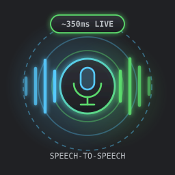
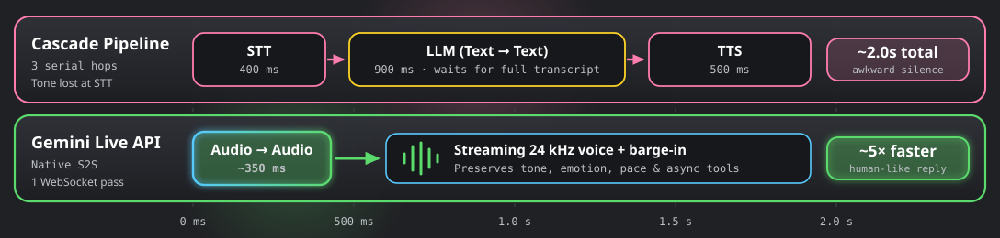
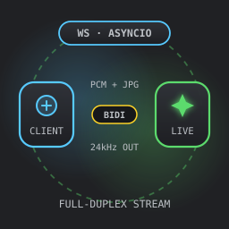
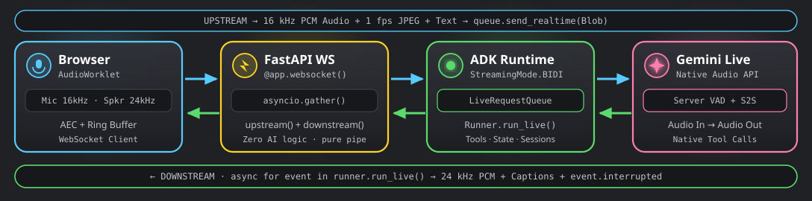
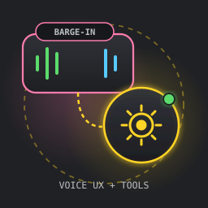
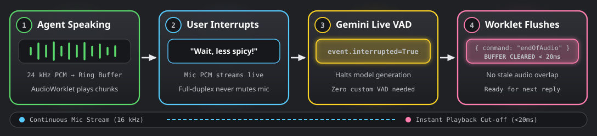
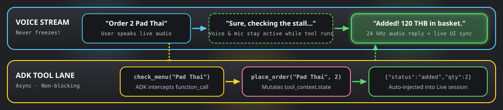
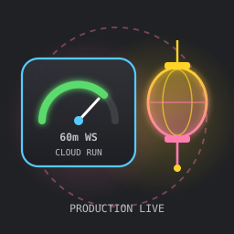
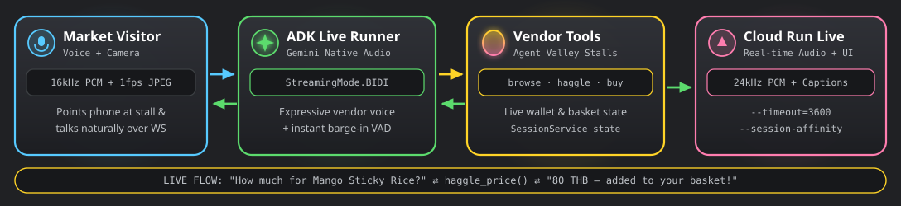
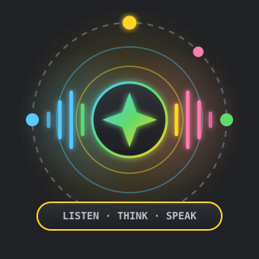

Gemini Live
Gemini Live ADK
ADK Python
Python
 Google Developer GroupBangkok · DevFest 2026
Google Developer GroupBangkok · DevFest 2026
Agenda
- 01Real-time vs Turn-basedWhy native speech-to-speech changes voice UX
- 02ADK Bidi-streamingLiveRequestQueue, RunConfig & async WebSockets
- 03Voice UX & Live ToolsBarge-in, live tools, streaming generators & sessions
- 04Production Live AgentsBackpressure, Night Market codelab & Cloud Run

Real-time vs
Turn-based
Why native speech-to-speech
changes voice UX
Why request-response chat feels robotic for voice
Awkward silence
2–4 seconds of dead air every turn. Humans expect a reply in ~300ms.
Walkie-talkie turns
Half-duplex: you cannot interrupt the bot while it finishes a 20-second monologue.
Lost audio nuance
Converting speech to text throws away tone, hesitation, urgency and background cues.
Cascade pipeline vs Native Speech-to-Speech
Gemini Live

Gemini Live Native S2S: 1 multimodal WebSocket streams audio in & out in ~350ms while preserving prosody & tools.
Cascade vs Gemini Live API at a glance
Gemini Live API
| Dimension | Cascade (STT → LLM → TTS) | Gemini Live API (Native S2S) |
|---|---|---|
| Time to first audio | 1.5 – 3.5 seconds (3 serial hops) | ~300 – 500ms (single streaming pass) |
| Barge-in / Interrupt | Hard: custom VAD + cancel 3 pipelines | Built-in: server VAD emits interrupted |
| Tone & emotion | Lost at STT; robotic TTS inflection | Preserves prosody, pace & emotional cues |
| Live video + audio | Separate frame uploads & sync glue | Interleaved audio + JPEG frames on 1 socket |
| Tool calling | Blocks whole turn before TTS starts | Native async tools + streaming generators |
Stream audio, video and text on one connection
Audio In
Raw microphone PCM streamed continuously in 50–150ms chunks.
audio/pcm;rate=16000Video In
Webcam or screen-share frames sampled at ~1 fps (768×768).
image/jpeg · ~1 fpsText & Events
Typed messages, button clicks, or silent UI state updates mid-call.
types.Content
ADK
Bidi-streaming
LiveRequestQueue, RunConfig
& async WebSockets
How ADK bridges your WebSocket to Gemini Live
 Browser
ADK
Live API
Browser
ADK
Live API

AudioWorkletPCM + WS Client
FastAPI WSasyncio.gather()
ADK RuntimeQueue + run_live()
Gemini LiveNative Audio + VAD
Configure a live voice agent with RunConfig
ADK
Python
from google.adk.agents import Agent
from google.adk.agents.run_config import RunConfig, StreamingMode
from google.genai import types
agent = Agent(
name="voice_concierge",
model="gemini-2.5-flash-native-audio-preview",
instruction="Be warm, brief, and natural in speech.",
tools=[check_menu, place_order],
)
run_config = RunConfig(
streaming_mode=StreamingMode.BIDI,
response_modalities=["AUDIO"],
speech_config=types.SpeechConfig(
voice_config=types.VoiceConfig(
prebuilt_voice_config=types.PrebuiltVoiceConfig(
voice_name="Aoede"
)
)
),
input_audio_transcription=types.AudioTranscriptionConfig(),
output_audio_transcription=types.AudioTranscriptionConfig(),
)
StreamingMode.BIDI
Switches ADK from turn-based HTTP to a persistent Gemini Live WebSocket.Native Audio Voice
Setresponse_modalities=["AUDIO"] and pick a built-in voice (e.g. Aoede, Puck, Kore).Live Captions
Enable both transcription configs to stream text captions alongside audio for UI & logs.Run upstream & downstream concurrently
from google.adk.agents.live_request_queue import LiveRequestQueue
@app.websocket("/ws/{user_id}/{session_id}")
async def live_ws(ws: WebSocket, user_id: str, session_id: str):
await ws.accept()
queue = LiveRequestQueue()
async def upstream():
while True:
msg = await ws.receive()
if "bytes" in msg:
queue.send_realtime(types.Blob(
mime_type="audio/pcm;rate=16000", data=msg["bytes"]
))
async def downstream():
async for event in runner.run_live(
user_id=user_id, session_id=session_id,
live_request_queue=queue, run_config=run_config,
):
await forward_event(ws, event)
try:
await asyncio.gather(upstream(), downstream())
finally:
queue.close() # always release Gemini Live session
Two async loops
upstream() pushes mic & camera into ADK while downstream() streams replies out simultaneously.LiveRequestQueue
One queue per WebSocket connection. Safe to push audio, video and text in any order.Always close()
Putqueue.close() in finally: so disconnects immediately shut down the upstream Live session.Stream audio PCM, video frames, or text
# 1. Continuous microphone audio (binary WS frame)
if "bytes" in msg:
queue.send_realtime(
types.Blob(
mime_type="audio/pcm;rate=16000",
data=msg["bytes"],
)
)
# 2. Camera / screen JPEG frame (~1 fps)
elif data["type"] == "image":
queue.send_realtime(
types.Blob(
mime_type="image/jpeg",
data=base64.b64decode(data["data"]),
)
)
# 3. Discrete text turn or UI context
elif data["type"] == "text":
queue.send_content(
types.Content(parts=[types.Part(text=data["text"])])
)
send_realtime()
For continuous media streams (PCM audio, JPEG frames). Server VAD decides when the user finished speaking.send_content()
For discrete text turns or injecting app events (e.g. "User clicked Checkout").Binary > Base64
Send mic PCM as raw WebSocket binary frames to cut bandwidth by ~33% and save CPU.Route audio bytes, captions and signals to the client
async def forward_event(ws: WebSocket, event):
# 1. User interrupted the model -> flush client audio!
if event.interrupted:
await ws.send_json({"type": "interrupted"})
return
# 2. Stream raw 24kHz PCM audio chunks as binary
if event.content and event.content.parts:
for part in event.content.parts:
if part.inline_data and part.inline_data.mime_type.startswith("audio/pcm"):
await ws.send_bytes(part.inline_data.data)
# 3. Live captions & turn completion
if event.output_transcription:
await ws.send_json({"type": "caption", "text": event.output_transcription.text})
if event.turn_complete:
await ws.send_json({"type": "turn_complete"})
event.interrupted
Highest priority signal. Tell the browser to clear its audio playback buffer immediately.Binary audio out
Forwardpart.inline_data.data directly via ws.send_bytes() for zero-copy playback.Standard ADK Event
SameEvent object as text agents — works seamlessly with ADK logging and state tracking.
Voice UX &
Live Tools
Barge-in, live tools,
streaming generators & sessions
Barge-in: stop speaking the instant the user talks
Server VAD
AudioWorklet

Server-side VAD: Gemini detects speech mid-reply, stops generating audio, and emits event.interrupted = True.
Client-side flush: Post { command: "endOfAudio" } to AudioWorklet to drop buffered audio in <20ms.
Call Python tools mid-conversation without freezing audio
ADK Tools
Python

def check_menu(stall: str) -> dict:
"""Return dishes & prices for a night market stall."""
return {"stall": stall, "items": [{"name": "Pad Thai", "thb": 60}]}
def place_order(item: str, qty: int, tool_context: ToolContext) -> dict:
"""Add an item to the user's basket in session state."""
basket = tool_context.state.get("basket", [])
basket.append({"item": item, "qty": qty})
tool_context.state["basket"] = basket
return {"status": "added", "total_items": len(basket)}
agent = Agent(name="market_guide", model="gemini-2.5-flash-native-audio-preview",
tools=[check_menu, place_order])
Zero extra wiring
Write normal Python functions with type hints & docstrings — identical to text ADK agents.Automatic execution
ADK intercepts the live tool call, updatestool_context.state, and feeds JSON back to Gemini.Voice UX tip
Prompt the agent to say "Let me check..." before slow APIs so silence feels natural.Streaming tools: yield live updates while chatting
import asyncio
from typing import AsyncGenerator
async def watch_order_status(
order_id: str,
) -> AsyncGenerator[dict, None]:
"""Stream kitchen updates until the order is ready."""
for step in ["received", "cooking", "ready_for_pickup"]:
yield {"order_id": order_id, "status": step}
await asyncio.sleep(15)
async def stop_watching(function_name: str):
"""ADK built-in pattern to cancel a running stream."""
...
agent = Agent(
name="market_guide",
model="gemini-2.5-flash-native-audio-preview",
tools=[watch_order_status, stop_watching],
)
Long-lived tools
UseAsyncGenerator instead of return. Each yield sends a fresh update into the active Live session.Proactive voice
The user keeps chatting about other stalls; when"ready_for_pickup" yields, the agent speaks up automatically.Clean cancellation
ADK cancels open streaming tools when the model calls a stop tool or the live session closes.Keep memory across disconnects and long calls
SessionService
 Vertex AI
Vertex AI
Why live sockets drop
Real-world networks are never permanent
How ADK keeps continuity
Built into RunConfig & SessionService
state in DB / Vertex AIThe browser half: AEC, AudioWorklet & VAD
Web Audio API
Echo Cancellation
Always request echoCancellation: true and noiseSuppression: true in getUserMedia(). Otherwise the bot's own speaker triggers false barge-in.
AudioWorklet Thread
Downsample 48 kHz → 16 kHz PCM and manage the 24 kHz playback ring buffer inside an AudioWorkletProcessor — never on the main UI thread.
Automatic vs Manual VAD
Default server VAD is great for hands-free calls. For noisy venues or walkie-talkie UX, send explicit activity_start / activity_end.

Production
Live Agents
Backpressure, Night Market codelab
& Cloud Run
Keep audio smooth under real-world load
Smaller than 20ms adds WebSocket framing overhead. Larger than 300ms adds audible latency and sluggish barge-in.
If network send buffers fill up, drop older JPEG frames. Audio is real-time; a 3-second-old camera frame is useless.
When upstream() hits WebSocketDisconnect, cancel downstream() immediately and call queue.close().
Never run sync HTTP or DB calls inside tools or WS handlers. Use async def tools or asyncio.to_thread().
The Night Market — Live Voice at Agent Valley
ADK
Live
 Cloud Run
Cloud Run

Deploy live voice agents on Cloud Run
 Google Cloud
Vertex AI
Google Cloud
Vertex AI
Cloud Run WebSockets
Native WS support, auto-TLS & up to 60-min request timeout.
gcloud run deploy live-voice-agent \
--source . \
--region us-central1 \
--timeout 3600 \
--session-affinity \
--min-instances 1 \
--concurrency 80
- ✓Set
--timeout=3600(60 min) so long voice calls aren't cut at the 5-min default. - ✓Enable
--session-affinityto route reconnects back to the warm instance. - ✓Set
--min-instances=1to avoid cold-start silence on the first hello. - ✓Use external SessionService (DB or Vertex AI) so state survives container restarts.
- !Enable context compression +
session_resumptionfor calls over 5 minutes.
Listen, Think, Speak
Browser
ADK
Gemini Live
1 · Listen
Stream 16 kHz PCM audio & JPEG frames into LiveRequestQueue.send_realtime() with AEC enabled.
2 · Think
Runner.run_live() connects Gemini Live with normal tools, AsyncGenerator streams & SessionService.
3 · Speak
Stream 24 kHz PCM audio & live captions back, and flush playback instantly on event.interrupted.
adk web with a Gemini Live model and talk to your existing ADK agent right in the browser.Read more and try the codelabs
ADK Streaming overview
adk.dev/streaming/Bidi-streaming Dev Guide
adk.dev/streaming/dev-guide/part1/Codelab: ADK Gemini Live Toolkit
Introduction to ADK Gemini Live API ToolkitCodelab: The Night Market
The Night Market — Live Voice at Agent ValleyGemini Live API Docs
ai.google.dev/gemini-api/docs/liveCloud Run WebSockets
cloud.google.com/run/docs/triggering/websocketsThank you
Q & A
Punsiri Boonyakiat
Google Developer Expert in Cloud AI
